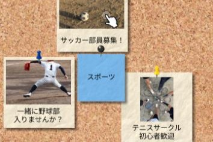
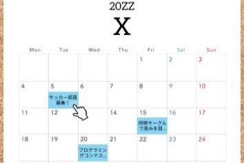

Vision
ビジョン
私たちは、友達作りの様々な障壁を壊し、そのサポートをします。
具体的には、
1.きっかけ
2.ファーストコンタクト
3.準備の面倒さ
これらを解決します。
universal freind
で広がる輪
安心のための本人確認
当サービスでは身分証による本人確認を実施しております. ご協力お願いいたします.

掲示板での募集
さまざまな分野の募集及び参加. 見やすいUIであなたに合ったコミュニティがきっと見つかる!

日程調整はお任せ
日程調整は当サービスで自動的に行えます. ご利用のカレンダーアプリとの同期などにより、快適に待ち合わせを実現します.